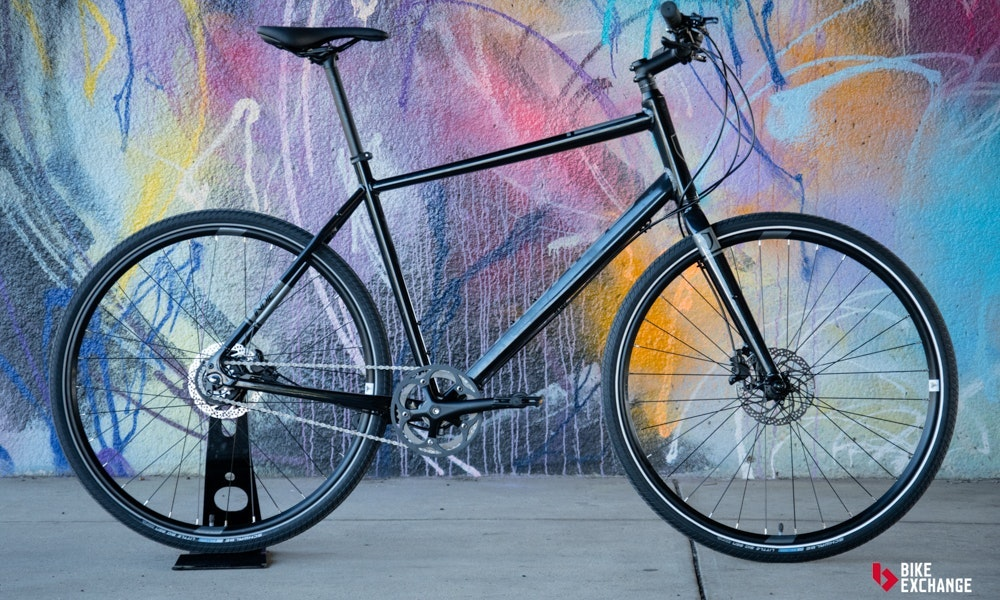

Bicicletas Urbana

Esta categoría es difícil de describir, ya que cubre todo tipo de bicicletas que sean diseñadas para el ambiente urbano y el transporte del día a día. Comúnmente se crean con el transporte eficiente en mente, para distancias cortas o medianas. Lo que las diferencia de las bicicletas de barra plana es que cambian la ligereza por resistencia, para adaptarse mejor al rigor de subir y bajar andenes y una que otra superficie difícil, algunas tienen el extra de tener en cuenta la seguridad, añadiendo ruedas anti-robo, compartimientos para seguros y hasta una estética menos llamativa a la mezcla. Mientras que otras toman el camino opuesto, absorbiendo la influencia de las bicicletas holandesas, con colores y diseños a prueba de tiempo, estas también son conocidas como bicicletas "clásicas" o "vintage", más adelante hablaremos a profundidad sobre este estilo.
Cuadro
Sus cuadros son muy resistentes y suelen ser más pesados que otros. Al estar diseñados para soportar carga, el material por excelencia es el acero, aunque es posible encontrar algunos cuadros fabricados en aluminio. En cuanto a la geometría, hay cuadros que utilizan tubo superior horizontal y otros con cuadros step-over, con un tubo superior bajo que facilita subir y bajar de la bici aún con carga. Un modelo clásico es el Omafiets, que traducido en español quiere decir bicicleta de abuelita. Otra característica de las urbanas son sus salpicaderas y por lo menos un rack trasero.
Manubrio/manillar
Una de las características distintivas de las bicis urbanas/holandesas es su manubrio. Por lo general estas bicicletas utilizan manubrios tipo porteur o north road los cuales se curvan hacia el o la ciclista permitiendo una postura cómoda, con los brazos relajados y la espalda completamente recta. Este tipo de manubrios también mejoran el control cuando se tiene canastilla o parrilla delantera, muy común en las bicis urbanas.
Ruedas
Sus ruedas también son resistentes. Hace algunos años lo común eran los aros de acero, pero con el tiempo han sido sustituidos por los de aluminio. Los rodados más usados por las bicis holandesas son los de 28″ y de 26″. Los modelos más enfocados a la carga suelen usar rodado 26″ y se equipan con llantas más anchas para soportar mejor el peso y brindar un rodado más suave. Por otro lado, las bicis enfocadas al transporte usan rodado 28″ y llantas más angostas lo que las hace más eficientes en la ciudad. Al estar optimizadas para la ciudad, estas bicis normalmente incluyen un dinamo, ya sea de botella o de maza, para generar electricidad para sus luces.
Velocidades
Historicamente las bicis holandesas eran principalmente de una sola velocidad o con tres cambios internos. Hoy en día puedes encontrar modelos de 1 a 7 cambios internos. Al no usar desviador, es muy común que cuenten con cubrecadenas completo por lo que requieren muy poco mantenimiento. Es posible encontrar algunos modelos económicos que usan desviador.